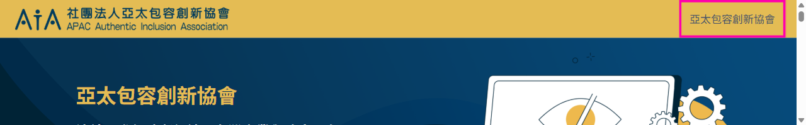
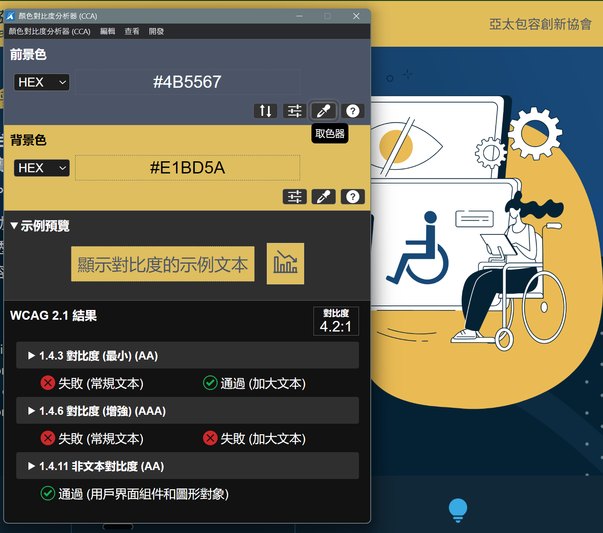

APAC AIA 網站 - 首頁無障礙測試與建議
這份報告給網站維護者、工程師與非技術關係人一起看。看不懂技術細節沒關係——每一項先看「問題」和「誰會被卡住」就能掌握大意；灰底的程式碼片段是給工程師的，跳過不影響理解。
測試日期：2026-07-03 | 範圍：首頁 | 工具：以自動檢測工具＋瀏覽器實測（備註：Beacon、axe-core、Lighthouse、Playwright）
優先 5 條、預定要做 2 條、建議 3 條、暫緩 5 條。「優先」的判準是會影響測試站現在的使用與測試；測試站上已知、後續會修正的項目放在「暫緩」先列作記錄。優先項目大多是 WordPress 後台設定。
本報告所有修法以免費版 Kadence 為前提，沒有任何一條需要 Kadence Pro。15 條裡大多是純後台操作（點選、填字、選色），不用寫任何程式；少數需要動到樣式的（「第 9 項 觸控範圍」「第 10 項 備援底色」），也都能在 Kadence 區塊設定裡直接調，或在「外觀 → 自訂 → 額外 CSS」貼一行現成的 CSS（複製貼上即可，不碰檔案、刪掉就還原）。
怎麼看這份報告
這份報告把首頁在無障礙測試中發現的 15 個項目，依「什麼時候該處理」分成四組。每張問題卡片左邊的色條，以及卡片開頭的文字標籤，都代表它屬於哪一組：
- 磚紅色實線＝優先（第 1–5 項）：會影響測試站現在的使用或測試，建議優先修正。
- 琥珀色實線＝預定要做（第 6–7 項）：必做、但要等對應條件（時機或權限）到位才能執行；卡片內會標明觸發條件。
- 深藍色實線＝建議（第 8–10 項）：改了更好，但不是非做不可。
- 灰色虛線＝暫緩（第 11–15 項）：測試站上已知、但要等其他東西（帳號、頁面、網域）就緒後才處理的；現在先列作記錄，後續修正。
每張卡片開頭還有第二個「外框樣式」的標籤，代表這個問題的類別（例如替代文字、對比、標題結構），方便你把同類型的問題一起處理。填色標籤看急迫度、外框標籤看類別，兩者分開看。
（顏色只是輔助；每張卡片開頭都有「急迫度」與「類別」兩個文字標籤，不靠顏色也分得出來。）
每張卡片最下面的灰色小字（例如「WCAG 1.4.3，警告」）是給工程師的規範對照——WCAG 是國際無障礙標準、AA 是常用的合格等級，非技術讀者不用理會。
優先（建議優先修正）
預定要做（等條件到位再執行）
建議（改了更好）
暫緩（先列作記錄，後續修正）
優先（建議優先修正）
優先
網頁語言
1. 網站語言設定與內容不一致
- 問題
內容是繁體中文，網站卻宣告自己是英文（lang="en-US"）。
- 誰會被卡住
-
視障者的螢幕閱讀器會用英文語音唸中文，整頁變成聽不懂的聲音。
用瀏覽器朗讀功能的人（開車聽網頁、眼睛疲勞的人、部分長輩）也會拿到錯的語音。
翻譯工具會誤判來源語言。
- Kadence 修法
這是 WordPress 核心設定：後台「設定 → 一般 → 網站語言」改為「繁體中文」。
- 通用解法
-
讓 html 標籤輸出 lang="zh-TW"。宣告的是整頁的「主要語言」，中英混排不衝突：目前首頁以中文為主，所以宣告中文。
頁內整段的英文（例如英文版使命宣言）可再用 lang="en" 包住該段，螢幕閱讀器會自動切換語音；夾在中文句子裡的專有名詞（WCAG、IAAP）不需要包。這一步在 Kadence 需要用區塊的「編輯為 HTML」手動加屬性，屬於加分項，可以之後再做。
雙語規劃：從無障礙的角度，值得留意的是各語言版本宣告正確的 lang，以及語言切換器能用鍵盤操作。目前查無各多語外掛之間可信的無障礙實測比較資料，所以這裡不特別推薦某一套；雙語版做好後可以再測一次確認。
WCAG 3.1.1，嚴重；語言切分屬 WCAG 3.1.2（AA）
優先
連結名稱
2. 頁首 logo 連結沒有名字
- 問題
logo 是連結，但沒有任何文字或替代文字。
- 誰會被卡住
-
螢幕閱讀器唸「連結」就沒了，視障者不知道點了會去哪。
用語音控制的人（例如受傷只能用聲音操作電腦的人）叫不出這個連結。
- Kadence 修法
-
媒體庫給 logo 圖片加替代文字，可以直接寫雙語，例如「亞太包容創新協會 APAC AIA 首頁」。
雙語補充：alt 屬性是純文字，無法在裡面再標語言，所以英文部分會由中文語音唸出（縮寫沒問題，長句不適合）。日後做雙語版時，各語言版本可各自設定 alt（中文版「亞太包容創新協會 首頁」、英文版「APAC AIA Home」），主流多語外掛都支援翻譯替代文字。
- 通用解法
logo 圖 alt 寫「組織名 首頁」，或在 a 標籤加 aria-label。
WCAG 4.1.2，嚴重
優先
標題結構
3. 標題結構需要整理
- 問題
-
白話版：現在網頁的「標題目錄」順序是亂的——有些真正重要的段落沒有被設成標題，有些只是裝飾用的小字反而被當成標題。對用螢幕閱讀器的人來說，就像拿到一本目錄錯亂的書。（以下是給工程師的細節。）
層級不連續：H1 之後直接跳 H4；About Us、Our Values、Our Milestones、What We Do、Areas of Focus、JOIN US 六個英文眉標用了 H6，正標題反而是 H2，層級倒過來；大事記年份與各區卡片標題用 H5，從 H2 直接跳過去。
內文被設成標題：關於我們區的三句長句（「當生活幾乎一切都在螢幕上完成⋯」等）是段落內容，卻設成 H2。
標題錯位：「多元共融／以人為本／科技創新」這三個詞在頁面上出現兩處，位置剛好錯開。主視覺區的摘要卡（只有圖示＋短標題＋一行英文，資訊量很少）被設成 H2 標題；「三大價值」區的完整說明卡（資訊量最多，每張有一整段文字）反而完全不是標題，只是加粗的 <strong> 文字。等於資訊少的地方佔了標題位置，資訊多、真正值得跳過去讀的地方卻沒有標題可跳。
順帶發現的內容問題：「我們關注的議題」有一張卡片中文寫「數位無障礙」、英文寫「International Standards」，兩邊意思對不上，可考慮改成「國際標準 International Standards」。
- 誰會被卡住
-
視障者靠標題清單跳著讀網頁，就像看書先看目錄；層級亂掉等於目錄亂排，他們會迷路。
把內文設成標題，用標題導覽的人會聽到一連串像標題的段落，更難抓到頁面結構。
標題錯位的影響更直接：想跳去讀「三大價值」完整說明的人，標題清單裡完全找不到「多元共融」可以跳，因為那裡沒有標題；反而主視覺那三個資訊量很少的摘要會出現在標題清單裡，跳過去也沒有太多可讀的內容。
趕時間掃讀的每個人也靠層級快速抓結構。
- Kadence 修法
-
所有修改都是在 Advanced Heading 區塊設定裡切換 HTML tag，外觀樣式不會變。前後差異如下，縮排代表標題層級（跟 HeadingsMap 看到的一樣），左側有色條的是需要調整的地方：
修改前（現況）
H1亞太包容創新協會
H4連結國際無障礙領袖⋯（說明文字）→ 改成一般段落
H2多元共融、以人為本、科技創新（主視覺摘要卡，圖示＋短標題，資訊量少）→ 改成一般文字，不進標題階層
H6About Us（英文眉標）→ 改成一般文字，樣式照舊
H2關於我們維持
H2當生活幾乎一切都在螢幕上完成⋯（內文長句）→ 改成一般段落
H2許多人因身體狀況、年齡⋯（內文長句）→ 改成一般段落
H2打破現有的侷限⋯（內文長句）→ 改成一般段落
H6Our Values（英文眉標）→ 改成一般文字
H2三大價值維持
非標題多元共融 Diversity & Inclusion（完整說明卡，目前是 <strong> 一般文字，資訊量最多但沒有標題可跳）→ 改成 H3
非標題以人為本 Human-Centered（完整說明卡）→ 改成 H3
非標題科技創新 Tech Innovation（完整說明卡）→ 改成 H3
H6Our Milestones（英文眉標）→ 改成一般文字
H2協會大事記維持
H52024 / Apr ⋯ 2026 / Sep（六個日期）→ 改成 H3
H6What We Do（英文眉標）→ 改成一般文字
H2我們創造什麼連結維持
H5跨界對話⋯（三張卡片）→ 改成 H3
H6Areas of Focus（英文眉標）→ 改成一般文字
H2我們關注的議題維持
H5數位無障礙⋯（四張卡片）→ 改成 H3
H6JOIN US（英文眉標）→ 改成一般文字
H2加入我們的行列維持
H2社群媒體 SOCIALS維持（視版面也可改 H3）
修改後（目標結構）
H1亞太包容創新協會
H2三大價值
H3多元共融
H3以人為本
H3科技創新
H2關於我們
H2協會大事記
H32024 / Apr ⋯ 2026 / Sep（六個日期）
H2我們創造什麼連結
H3跨界對話、國際接軌、從理念到落地
H2我們關注的議題
H3數位無障礙、包容性設計、國際標準、齡共融科技
H2加入我們的行列
H2社群媒體 Socials
About Us 等英文眉標保留在畫面上，但已是一般文字，不在標題階層內；「多元共融」等三個標籤修改後只在「三大價值」底下出現一次（H3），主視覺那組摘要卡的同名文字保留在畫面上但不再是標題，不會有兩組同名標題並存的問題。
- 通用解法
-
標題只用來表達文件結構，一層一層來；純裝飾的小字用段落＋CSS，不要用 H5／H6 讓字變小。
WCAG 1.3.1，嚴重
優先
對比
4. 導覽列文字對比不足
- 問題
-
選單文字顏色 #4a5568 配上背景 #e4bc54，對比約 4.16:1，略低於一般文字建議的 4.5:1，可以微調一下。
補充一點可能有幫助的背景，讓調整少走冤枉路：這段是一般文字（17px、正常字重），適用的是 4.5:1，而不是大文字較寬鬆的 3:1。有兩個地方容易誤會——對比值只由顏色決定，把字加粗並不會改變 4.16 這個數字；而要套用大文字的 3:1，粗體時字級需要到 19px 以上，目前 17px 即使加粗仍差一點。所以比較穩妥的方向會是調整顏色，而不是加粗。

位置：頁首金黃色列右側的站名連結。左側 logo 旁的深色文字是另一組樣式、對比沒問題；需要微調的是右側這組較小的選單文字。

用 Colour Contrast Analyser（CCA）獨立複測：取樣色碼 #4B5567／#E1BD5A，對比 4.2:1（跟 axe-core 讀到的 4.16:1 略有差異，屬取色器與瀏覽器 computed style 的正常誤差範圍）。CCA 顯示「常規文字未達 AA、加大文字合格」兩列——本頁這段是常規文字，適用未達的那一列。
- 誰會被卡住
-
低視能、老花、色弱的使用者看不清楚。
大太陽下用手機的每一個人都看不清楚。
- Kadence 修法
外觀 → 自訂 → Colors，把選單文字改深海藍 #003B5C 或墨黑 #231815（背景若是品牌暖陽金 #F8B62D，兩個組合分別是 6.58:1 與 9.66:1，都合格且都在品牌規範內）。
- 通用解法
文字對比至少 4.5:1；可直接取用品牌規範對比矩陣裡的合格組合。
WCAG 1.4.3，警告
優先
對比
5. 按鈕文字對比不足
- 問題
-
「了解志工機會」按鈕白字配 #e8593a 橘紅底，對比 3.54:1。而且 #e8593a 不在 AIA 品牌色票裡。
這是一般文字（18px、正常字重），適用 4.5:1 門檻。3.54 離 4.5 頗遠，加粗也沒用（比值只看顏色，不會變）；就算加粗＋放大到 19px 走大文字的 3:1，也只剩 0.5 出頭的餘裕，很勉強。直接改成品牌 CTA 配色最穩。
- 誰會被卡住
-
跟第 4 項一樣，低視能、老花、色弱與強光下的使用者看不清楚。
這是全頁唯一的行動按鈕，看不清楚的話，訪客就少了採取行動的入口。
- Kadence 修法
按鈕區塊改品牌 CTA 組合：暖陽金 #F8B62D 底＋墨黑 #231815 字（9.66:1）。
- 如果一定要走橘紅色（色階參考）
-
（非技術讀者可略過本節：建議直接用上面的品牌暖陽金＋墨黑最穩、也最符合品牌；以下是「若品牌方堅持用橘紅色」時給工程師的色階參考。）
橘紅色其實有兩條都能過 4.5:1 的路，中間有一段兩種字都不過的範圍要避開：
- 想保留明亮橘紅＋墨黑字：
#e8593a 配墨黑字已有 4.88:1、直接過；若再往上加一階、把橘紅調淡一點（如 #ea6648），墨黑字餘裕更大（5.35:1）、視覺也更亮，會更保險。
- 想維持白字的按鈕感：把橘紅加深成磚紅色，深到
#cd3918 以下白字才會過。
- 避開中間段（如
#e5441f）：白字和墨黑字都差一點，兩邊都不到。
橘紅色階：同一色系由亮到深，各配白字／墨黑字的對比（AA 一般文字門檻 4.5:1）
| 底色 | 白字效果 | 白字對比 | 墨黑字效果 | 墨黑字對比 | 建議 |
|---|
#ea6648
淡一階 |
了解志工機會 |
3.2：✗ 未過 |
了解志工機會 |
5.4：✓ 過 |
墨黑字，餘裕比目前更大，推薦 |
#e8593a
目前 |
了解志工機會 |
3.5：✗ 未過 |
了解志工機會 |
4.9：✓ 過 |
保留此色，改用墨黑字 |
#e5441f |
了解志工機會 |
4.1：✗ 未過 |
了解志工機會 |
4.3：✗ 未過 |
兩種字都差一點、都不過，避開 |
#cd3918 |
了解志工機會 |
5.0：✓ 過 |
了解志工機會 |
3.5：✗ 未過 |
白字，較深的磚紅 |
#a42e13 |
了解志工機會 |
7.1：✓✓ 過（AAA） |
了解志工機會 |
2.5：✗ 未過 |
白字，最深、餘裕最大 |
提醒：這個橘紅不在 AIA 品牌色票裡，以上是「若堅持用橘紅」的合格選項；若沒有特別理由，回到品牌暖陽金＋墨黑（9.66:1）在品牌一致性與餘裕上都更好。
- 通用解法
文字對比至少 4.5:1；可直接取用品牌規範對比矩陣裡的合格組合。
WCAG 1.4.3，警告
預定要做（等條件到位再執行）
預定要做
鍵盤操作
6. 人工鍵盤走查一輪
- 問題
焦點框（Tab 時顯示你在哪裡的外框）無法用工具可靠確認，需要人工測。原則上沒有「哪些重要、哪些不用」的分別——凡是滑鼠點得到的（連結、按鈕、輸入框），鍵盤都要 Tab 得到，而且每一個停下來的地方都要看得見焦點框。焦點框為什麼這麼重要，見文件後面的〈焦點框為什麼重要〉章節。
- 這頁實際要走查的停留點
-
目前這頁可以 Tab 到的互動元素共 10 個，走查時每一個都該看到清楚的外框：
- 「跳到主內容」skip link（Tab 第一下就會出現，本身也要看得見）
- 頁首 logo 連結（桌面版與手機版各一個）
- 導覽列的站名連結
- 手機版漢堡選單的「開啟／關閉」按鈕
- 頁尾三個社群連結（Facebook／X／Instagram）
之後補齊的東西也要一起走查：志工按鈕改成真連結後（第 12 項）、導覽選單補上的項目（第 14 項）。
- 什麼時候做（觸發條件）
等到會改變「哪些元素可聚焦、Tab 順序」的修正都到位後再做定版走查：具體是第 12 項（志工按鈕改成真連結）與第 14 項（導覽選單補項目），只有這兩項會新增可聚焦元素、改變順序。其他修正（對比、alt、標題、http）不影響鍵盤流程，不用等。焦點框可見性與順序是機器測不到的，所以這一步不會被自動化測試取代，只是排在結構改動穩定之後做才有實質意義。
- 若走查發現問題
這一項本身是測試步驟、不是要改的設定。但如果走查發現某些元素 Tab 過去看不到外框，通常是佈景或自訂 CSS 用了 outline:none 把預設外框拿掉了；補救方式是在「外觀 → 自訂 → 額外 CSS」為 :focus-visible 加一個明顯的外框，例如 a:focus-visible,button:focus-visible{outline:3px solid #003B5C;outline-offset:2px}。
- 通用解法
上線前拔掉滑鼠、只用鍵盤 Tab／Shift+Tab／Enter 走完整頁，確認每一個停留點都有看得見的外框，且順序合理。
預定要做
替代文字
7. 內容圖片缺少替代文字
- 問題
-
首頁的內容照片幾乎都沒有可用的替代文字（alt），分兩種：
完全沒有 alt（兩個檔案）：fred-kloet-Cv7Y0v51zEo-unsplash.png（用了兩處）與 compagnons-EgwhIBec0Ck-unsplash.png。螢幕閱讀器會唸「圖片」或整串檔名。
設成 alt="" 空值（另外七張）：主視覺插畫、人物與情境照被設成空的 alt，等於宣告「這是裝飾、跳過」，螢幕閱讀器會整張略過、完全不唸。自動檢測工具不會標（alt="" 語法合法），但它們其實是有意義的內容照，一樣要描述。
合計九張內容圖片需要補描述性 alt；各圖建議的替代文字見另附的替代文字對照表（Excel，含縮圖）。
為什麼另外七個小圖示不用補 alt（屬裝飾性圖案）：三大價值與關注議題區的圖示（對應「多元共融」「以人為本」「科技創新」「數位無障礙」等）都緊挨著同名的文字標題——文字已經把意思說完，圖示只是視覺點綴。這種「圖示旁邊就有文字說明同樣意思」的情況，正確做法是設 alt="" 讓螢幕閱讀器跳過；否則會被唸兩次（例如「多元共融的圖示，多元共融」）。所以這七個維持 alt="" 是對的、不用動。判斷規則：圖示旁有文字說明同義 → 屬裝飾、設 alt=""；圖示單獨出現、旁邊沒有文字 → 不是裝飾、要補 alt。（頁首 logo 連結另見第 2 項。）
- 什麼時候做（觸發條件）
觸發條件：需在能登入 staging 網站的狀態下才能執行。替代文字要在能登入 staging 的狀態下，逐張填進 WordPress 各圖的替代文字欄。這一項嚴重度是「嚴重」等級（見下方 WCAG），只是執行時機卡在登入權限，所以列在「預定要做」而非「優先」。
- 誰會被卡住
-
視障者：沒有 alt 只聽到「圖片」；設成 alt="" 的更嚴重，整張被跳過，連有這張圖都不知道。
網路慢或圖片掛掉時，所有人只看到空白框。
搜尋引擎與 AI 也讀不到圖的內容。
- Kadence 修法
-
在 Kadence 的 Builder（頁面編輯器）裡：選取該圖片區塊，右側設定欄有「替代文字（Alt Text）」欄位，填入後立即生效。逐張把對照表裡的中文 alt 填進去；原本 alt="" 的那幾張，把空值改成描述文字即可。
媒體庫的「替代文字」欄位也建議一併填：它會自動帶入之後新插入的圖，但不會回頭更新已放進頁面的區塊，所以已在頁面上的這幾張以 Builder 裡的設定為準。
- 通用解法
-
有意義的圖寫描述性 alt；純裝飾的圖才寫 alt=""（空值，讓閱讀器跳過）。判斷標準是「這張圖有沒有傳達內容」，不是「工具有沒有標」。
替代文字綁定當下那張圖：日後若更換或替換照片，alt 要跟著重寫，不能沿用舊描述。
補充（非違規，順手做就好）：這幾張圖還是 Unsplash 的原始檔名，日後替換或新增圖片時可順手改成描述性檔名（對圖片搜尋與媒體庫管理有幫助），照片類也可考慮用 JPEG 或 WebP 取代 PNG，檔案小很多。
WCAG 1.1.1，嚴重
建議（改了更好）
建議
圖示文字
8. 社群圖示旁加文字
- 問題
三個社群連結只有圖示，沒有看得見的文字。
- 誰會被卡住
不認得圖示的人，例如很多人還不認得 X 的新 logo；認知障礙使用者更需要文字確認那是什麼。（螢幕閱讀器沒問題，aria-label 已存在。）
- Kadence 修法
Footer social 元件的設定裡，每個社群項目本來就有標籤（label）欄位，開啟「顯示標籤」即可；官方文件顯示 footer 元件免費版與 Pro 的差異只有深色模式切換，此開關應為免費功能。若你們的版本找不到這個開關，保底做法：在社群圖示旁加一個文字區塊寫上平台名稱，效果相同。
- 通用解法
圖示＋文字並列是對所有人最保險的做法。
建議
觸控目標
9. 社群圖示可點範圍加大
- 問題
可點範圍實測 34×34px，過了標準最低門檻 24×24，但低於 Apple 與 Google 行動準則的 44×44。圖示本體只有 17×17px，偏小。
- 誰會被卡住
手抖的人（年長者、帕金森氏症患者）、手指較粗的人、走路中單手滑手機的每一個人，都容易點歪。
- Kadence 修法
Customizer 的 social 圖示尺寸調大；或用免費版內建的「外觀 → 自訂 → 額外 CSS」加：.footer-social-item{padding:5px; min-width:44px; min-height:44px}。
- 通用解法
觸控目標至少 44×44px。
WCAG 2.5.8 已過、2.5.5 AAA 未達
建議
備援底色
10. 主視覺與三大價值區可補一個備援底色
- 問題
主視覺與三大價值區的文字是純白 #ffffff，疊在深色背景圖上；這兩區只設了背景圖、沒有純色備援底色。多數情況沒有影響，但背景圖若沒畫出來，白字會疊在白底上看不見。實際上正常網速下圖片零點幾秒就載完、幾乎察覺不到；唯一每次必然發生的是列印或另存 PDF（瀏覽器預設不印背景圖），此時這些文字會看不見。（附帶一提：用 WAVE 關掉樣式檢視時也會看到這區塊變白，但那是工具的檢視模式，不是真實問題。）
- Kadence 修法
在 Kadence 編輯該區塊（Row Layout）的 Background 設定裡，除了背景圖，另外把背景顏色設成品牌深海藍 #003B5C；或用「外觀 → 自訂 → 額外 CSS」加 background-color:#003B5C;。一行設定、零風險，有圖時看不出差別，沒圖時就靠這個底色撐住白字。
- 通用解法
文字疊在背景圖上時，同一個元素順手補一個對比足夠的純色備援底色。
暫緩（先列作記錄，後續修正）
暫緩
連結目標
11. 頁尾社群連結是空的
Facebook、X、Instagram 三個圖示的連結是空的，點了只會重新載入本頁（訪客會以為網站壞了）。社群帳號建好後填入真實網址即可，還沒申請的可先隱藏圖示。先列作記錄。
WCAG 2.4.4，連結目的（建議級）
暫緩
鍵盤操作
12. 「了解志工機會」按鈕不能按
按鈕沒設連結、輸出成不能操作的 span，鍵盤與螢幕閱讀器使用者都用不到。志工頁建好、按鈕接上真實連結後就會恢復正常。先列作記錄。
WCAG 2.1.1，嚴重；等志工頁建立
暫緩
頁面標題
13. 網頁沒有標題（上 staging／正式站時設定）
分頁標題（title）是空的，分頁上顯示的是網域名；螢幕閱讀器進頁、書籤、搜尋結果也都拿不到頁名。上 staging 或正式站時，在後台「設定 → 一般 → 網站標題」填入名稱即可（順手把 site icon 一起設，目前還是 WordPress 預設的 W）。先列作記錄。
WCAG 2.4.2，嚴重
暫緩
導覽選單
14. 主要導覽選單尚未串接頁面
這點不是原本測試流程裡列出的項目，是實際操作時順帶記錄的。頁首導覽目前只有一項「亞太包容創新協會」、連結指向首頁自己，手機版漢堡選單展開也只有這一項。大概率是其他頁面還沒建好；等頁面陸續上線後把它們加進導覽即可。先列作記錄，不細寫解法。
暫緩
圖片協定
15. 圖片網址是 http（第一次搬站時一併處理）
21 張圖片裡 19 張的 src 是 http://（Chrome 會自動升級，現況影響很低）。目前 aia.tinyoakstudio.com 是開發者的臨時測試站，之後會搬到 staging、再到正式網域。重點：第一次搬站做全站搜尋取代時，把 http://… 連協定一起換成 https://…、不要只換網域名，這樣一次修對、後續搬站就不必重來。先列作記錄。
焦點框為什麼重要
（這一段是留存記錄、並給非技術讀者參考用：說明為什麼「那圈外框」不能因為「不好看」就拿掉。工程師與設計師對焦點框已熟悉，可略過。）
焦點框（focus indicator）就是用鍵盤 Tab 移動時，套在目前所在連結或按鈕外圍的那一圈外框。它常被當成「不好看」而被移除，但對某些人來說，它是唯一能知道「我現在在哪裡」的線索。
範例：焦點框長這樣
了解志工機會
✓ 有焦點框：一眼看到游標停在這顆按鈕上。
誰靠它操作：用不了滑鼠、只能靠鍵盤的人（手部或動作障礙、使用切換式輔具的人）；螢幕放大鏡使用者（畫面只看得到一小塊，靠焦點框確認位置）；還有滑鼠剛好壞掉、或習慣用鍵盤的一般使用者。對他們來說，焦點框等於滑鼠的游標。
沒有它會怎樣：Tab 過去卻看不到外框，等於閉著眼睛操作——不知道游標停在哪、不知道按 Enter 會觸發什麼，只能亂猜。有焦點框，這些人就能順順地一站一站走完整頁。
工程師備註（實作重點，非技術讀者可略過）：
- 不要用
outline:none 把外框拿掉卻不補回來；要移除預設樣式，就用 :focus-visible 換一個更清楚的外框。
- 外框本身也要有足夠對比（跟背景至少 3:1），不能細到看不見。
- 焦點框不該被固定頁首、彈窗等蓋住（WCAG 2.4.11 焦點不被遮擋）。
對應 WCAG 2.4.7 焦點可見（AA）、2.4.11 焦點不被遮擋（2.2 AA）、2.4.13 焦點外觀（AAA）。這不只是無障礙規範——任何人在滑鼠失靈時都會需要它。
附帶一提（非無障礙、給工程師／SEO，非技術讀者可略過）：首頁缺 meta description（搜尋結果摘要）與 JSON-LD 結構化資料，屬 SEO／AEO 範疇、不是無障礙問題；可在上線、拿掉 noindex 時用 SEO 外掛（如 Rank Math／Yoast）一併補上。
測過且通過的項目
以下項目已測試確認沒問題，可以放心跳過。
- 手機小螢幕不會出現橫向捲動、版面會正確縮排
- 使用者可以自由放大頁面（縮放沒有被鎖定）
- 有「跳到主內容」的快速鍵，目標存在
- 沒有自動播放的影音、沒有會閃爍的內容
- 鍵盤不會卡住、操作順序正常
- 動畫有部分支援「減少動態」的系統偏好
- 版面載入穩定、不會跳動
- 連結文字（logo 除外）都看得出用途
- 頁面唯一的表單（密碼表單）有正確標籤
工程師備註：viewport、skip link、tabindex、canonical、robots.txt、CLS 等項目也已一併確認。